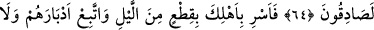

MELEKLER LÛT (A.S.)’IN
YANINDA
61-62. Elçiler Lût âilesine gelince, Lût onlara: “Hakîkaten siz tanınmayan
kimselersiniz.” dedi.
63. Dediler ki: “Bilakis, biz sana, onların şüphe etmekte oldukları şeyi (azâbı ve
helâkı) getirdik.
64. Sana gerçeği getirdik; biz, hakîkaten doğru söyleyenleriz.
65. Gecenin bir bölümünde aile fertlerini yola çıkar, sen de arkalarından yürü.
Sizden hiç kimse, sakın dönüp de ardına bakmasın, emrolunduğunuz yere gidin.”
66. Ona (Lût’a) şu hükmümüzü vahyettik: “Sabaha çıkarlarken mutlaka onların
ardı kesilmiş olacaktır.”
“Elçiler” melekler “Lût âilesine gelince, Lût onlara: “Hakîkaten siz” garip/tuhaf,
buralarda pek “tanınmayan kimselersiniz” ya da hem üzerinizde yolculuk emâresi
olmadığı gibi, bu bölgede mukim de değilsiniz! Bu sebeple, korkarım ki bana bir
kötülük yapacaksınız? “dedi.”
63. Dediler ki: “Bilakis, biz sana, onların şüphe etmekte oldukları şeyi (azâbı ve
helâkı) getirdik.
“Dediler ki: “Bilakis, biz sana, onların şüphe etmekte oldukları şeyi” yâni, seni
sevindirecek, düşmanına karşı sadrına şifâ olacak şeyi yâni, başlarına geleceğini vaad
edip durduğun, fakat vâki olmasını dâimâ şüphe ile karşıladıkları, cehâlet ve inâdları
yüzünden seni yalancı sayarak şüphe ettikleri azâbı “getirdik.”